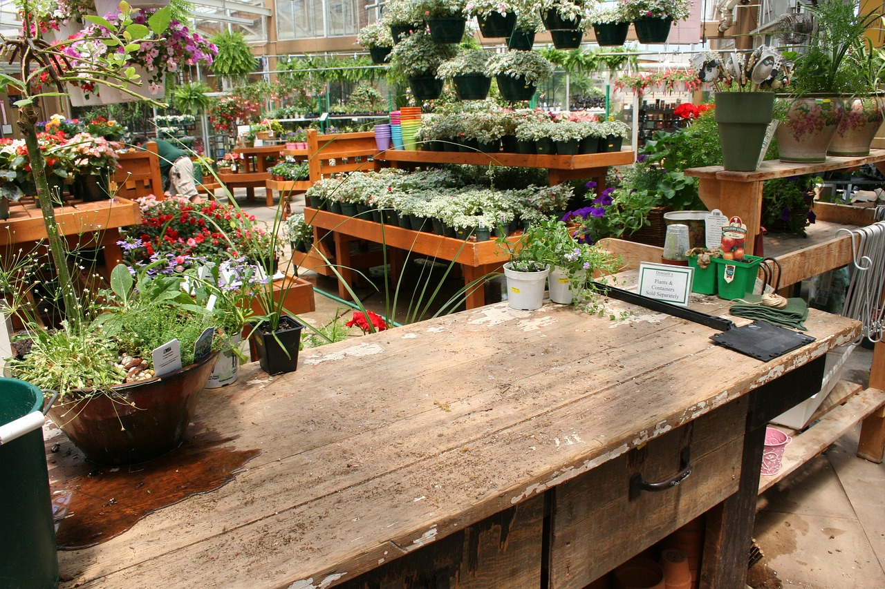
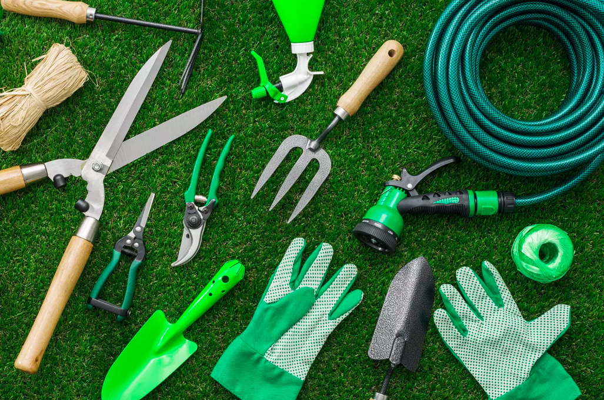
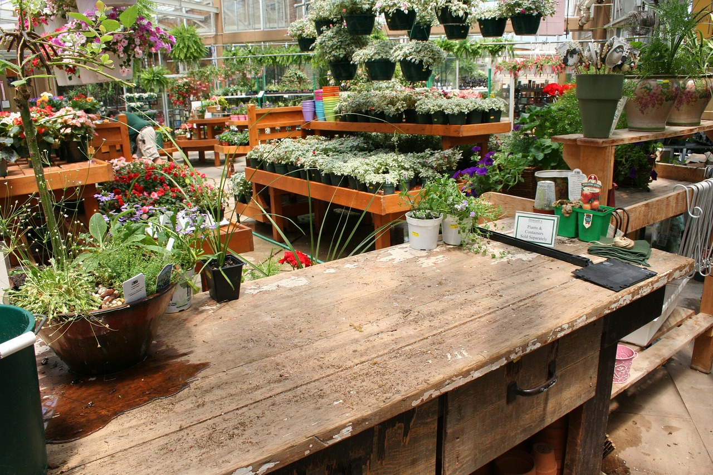
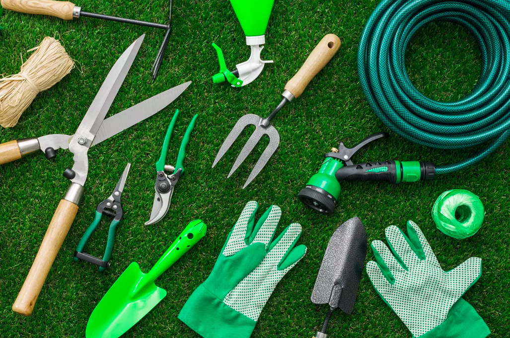

Les offres du moment
Je découvreIdées et conseils
En savoir plusA la une
Comment faire pousser des tomates ?
Qui donc possède un potager sans aucun pied de tomate ? Il faut dire que ce légume est le chouchou de tous et que sa culture est des plus faciles...

10 choses à savoir sur les plantes d'intérieur
Que vous soyez experts ou simples débutants, apporter les meilleurs soins à vos plantes d'intérieur vous tient à cœur. Vous trouverez ci-dessous 10 conseils pour vous aider à améliorer vos compétences...
Entretenir ses plantes en hiver
Il fait plus froid dehors et les feuilles jaunissent ? C'est signe que vous devez prendre soin de vos plantes d'intérieur aussi. Il est important de bien s'occuper des plantes d'intérieur en hiver, et de les choyer davantage....